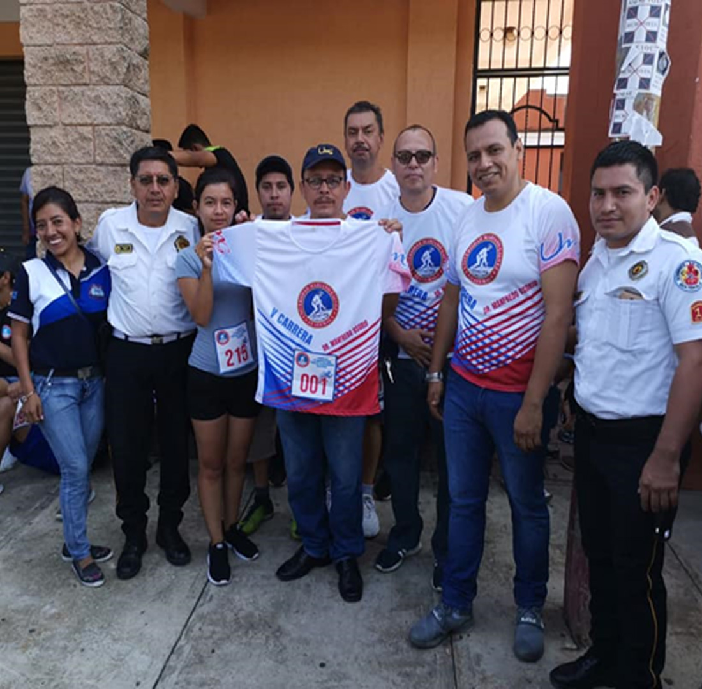
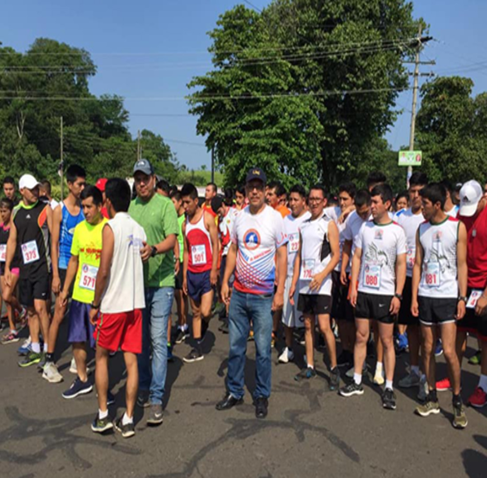
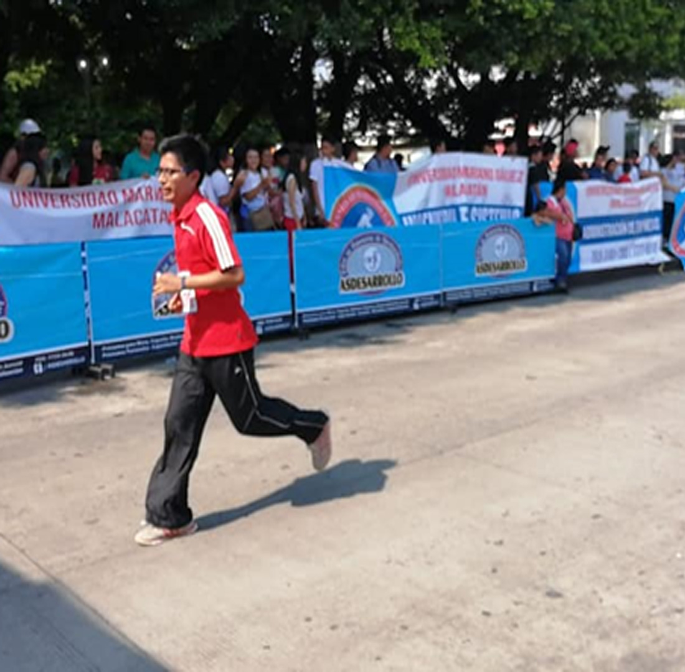

Para celebrar un año más de trabajo constante se hace las siguientes actividades para motivar y hacer a los estudiantes participes de esta celebración teniendo en cuenta nuestros valores y el rendimiento y la colaboración de todos. Carrera 5km una actividad física que nos motiva a trabajar la mente y el cuerpo y siempre con la ayuda de los bomberos voluntario, donde participaron alumnos, catedráticos y personas de afuera que fue un recorrido que comenzó de del cruce de Orizaba y culminaba en el parque de malacatan.
En la mañana cultural que se llevó a cabo el primero de septiembre del 2019 es para fomentar el mes patrio y comenzar de la mejor manera con la participación de los alumnos cada uno presentando Bailes, teniendo Marimba en vivo y en diferentes puestos donde se podía ver la diversidad de culturas y esto se fue hecho en el parque de malacatan para que el público en general también pudiera observar a los alumnos en su diversas actividades haciendo énfasis en un año más de nuestra independencia que nos dio la libertad.

Elección de la señorita Umg es para seguir conmemorando los 53 años que cumplía la universidad en mayo del 2019 en esta celebración se puede mostrar la belleza y el carisma de que cada señorita y cada una representa las diferentes Facultades y hace que los alumnos convivan y sean un grupo uno solo y esto se celebró en las instalaciones del colegio Santa Lucia no solo es una representación más es la enseñanza de la unión y de los valores que se tiene. Forjando el carácter y la actitud de cada represente de las facultades.